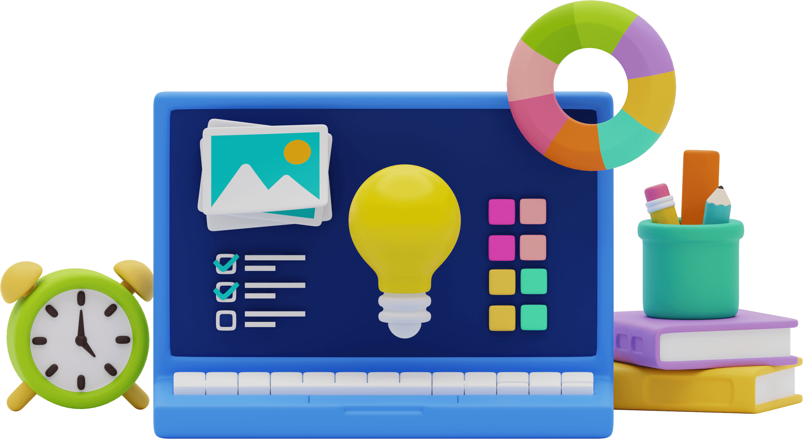
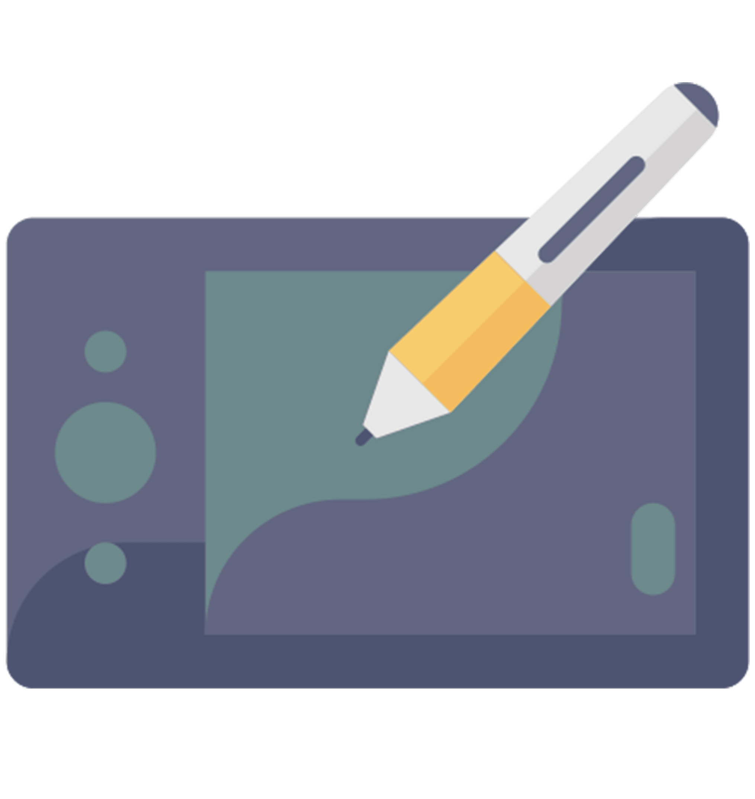
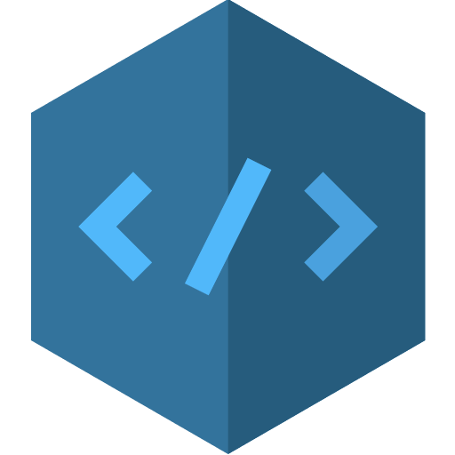
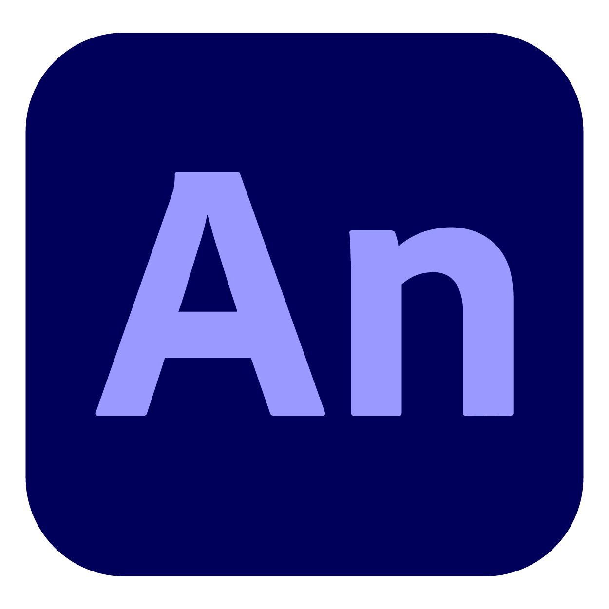

I am a Multimedia Artist
Most of what I’ve learned has come through trainings, hands-on practice, self-guided learning, and diving
into online courses to build a strong foundation in user experience and design thinking. Along the
way, I’ve also picked up skills in graphic design and project management, which help me approach
problems from both a creative and strategic perspective.
My goal is always to design products that aren’t just visually appealing, but also meaningful
and useful solutions that solve real-world problems. I believe in the power of iteration and
user feedback, and I’m always looking for ways to improve and create experiences that feel intuitive,
thoughtful, and genuinely enjoyable to use.


My Story
My journey into Multimedia Arts began in college, where I discovered my passion for creative storytelling and visual design. I started working as a volunteer animator and character rigger, contributing to cartoon shows and gaining early hands-on industry experience. I also enhanced my skills by completing trainings in Creative Web Design, Animation NC II, and 2D Animation NC III, and attending a workshop in Photography — training that also sparked my interest in Web Design and Front-End Development. Alongside animation, I explored graphic design through freelance projects focused on branding and digital content. Today, I continue to grow as a multimedia artist, combining animation, design, and visual storytelling to bring ideas to life.
My Skills

UI/UX Design

Graphics Design

HTML/CSS
